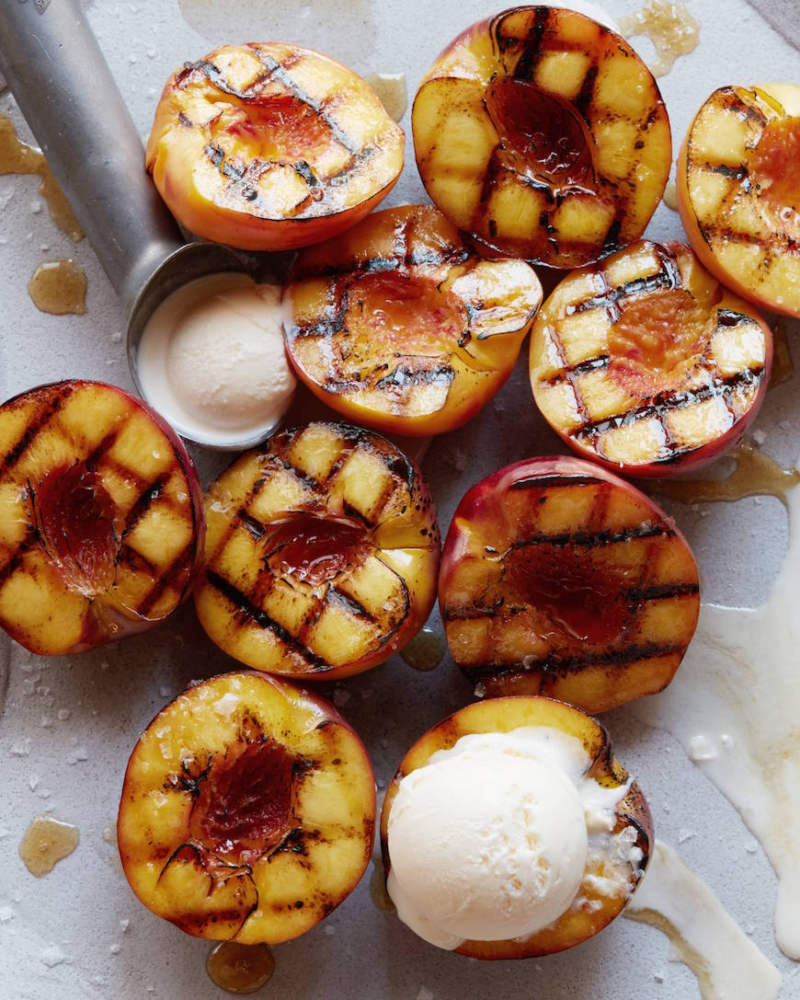

Grilled Peaches with Vanilla Ice Cream
Home

Description
Warm, soft, and smoky, these grilled peaches will blow your mind. Pair them with vanilla icecream for the greatest dessert ever!
Ingredients
- 2 peaches
- 2 nectarines
- Canola oil
- 8 scoops of vanilla icecream
- Honey and sea salt for finishing
Steps
- Heat grill to medium high heat.
- Brush the peaches and nectarines with oil and place on the grill for a few minutes.
- Rotate the peaches and nectarines 90 degrees and let cook for about 3-4 minutes total.
- Remove the peaches and nectarines from the grill and serve with a scoop of ice cream in the center of the fruit